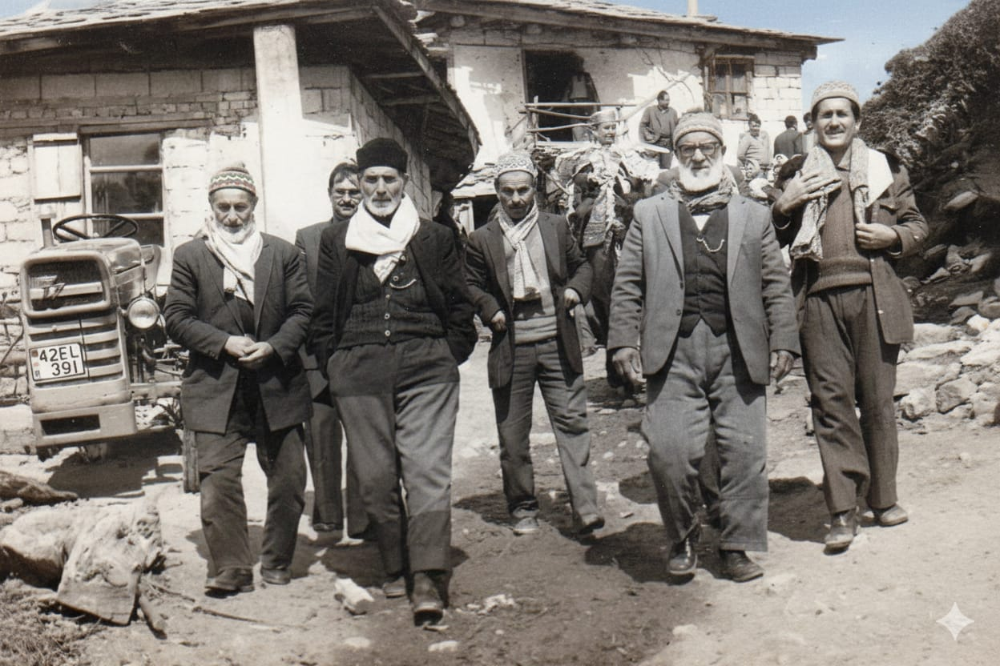
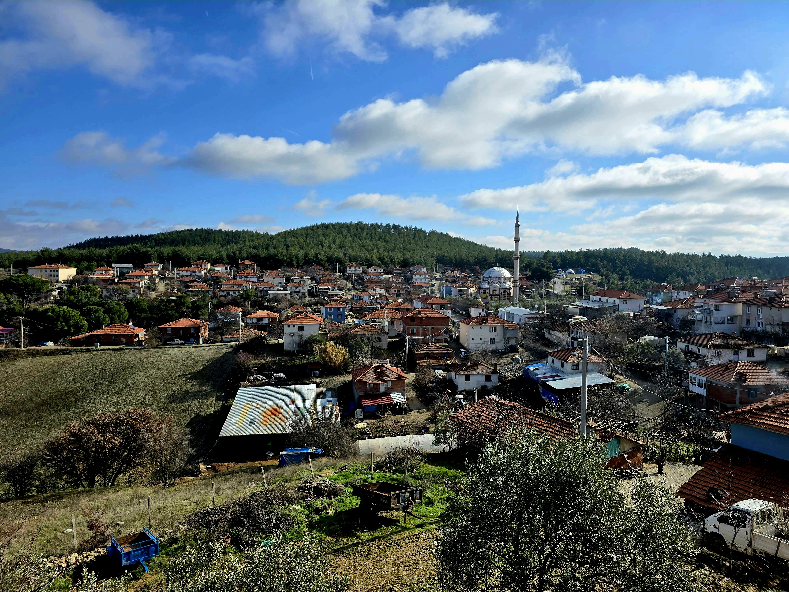

GEÇMİŞTEN İZLER


Site Yapım Aşamasındadır. ÇOK YAKINDA SİZLERLE...
Çiğiller Köyü, Manisa’nın Gördes ilçesine bağlı bir yerleşim
yeridir. Gördes’e yaklaşık 16 km, Manisa’ya ise yaklaşık 116 km
uzaklıkta bulunan köyümüz, geçmişten bugüne uzanan yaşam
kültürünü korumaya devam etmektedir. Resmî nüfus kayıtlarına
göre Çiğiller Mahallesi’nin 2024 yılı nüfusu 420’dir.
Hazırlanan bu internet sitesi köyümüzün tarihini,
fotoğraflarını, anılarını ve güncel duyuruları tek bir yerde
toplamak ve köyümüzü tanıtmak için hazırlanmıştır.
